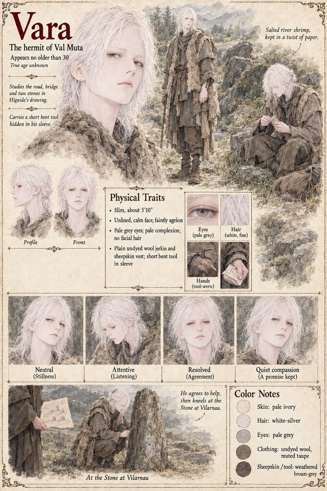

Vara
The hermit of Val Muta · looks no older than thirty · true age unknown
The people of Val Muta call him Vara, when they call him anything: a hermit in a high green hollow of the hills, in a season when something is in flower, in a shack of his own building at a river bend. He looks no older than thirty and is, by every account, a good deal less in a hurry. He lives beside the river because he likes the river, and eats salted river shrimp out of a twist of paper with the unhurried attention of a man for whom it is the main event of the day. He hears out the whole of the foreigner's account, the Stone, the Law, the hand that signs and a child asleep with her fist closed on a sleeve, in gestures, in the several hundred words of the Lauze dialect that Tomobe no Higaide has to give, and in a drawing in the dust of a road, a bridge, and two stones with a line between them. He reads it as a miller's daughter once read a ditch, not by the shape of the line but by the direction in which the marks are going. He agrees. His reasons are in no file, the manuscript says, since he is not a man who enters things.
He comes back with the foreigner by the long road, and on an evening in a spring that nobody in the valley has marked as particular he is standing a little apart on the green at Vilarnau, a lean young-looking man eating something out of a twist of paper, while the village comes out and stands in a half-ring forty paces off. When Gersenda has said Two seconds and been answered, he finishes his shrimp, folds the twist of paper into a neat square, and kneels at the Stone with a short bent thing from his sleeve that nobody is looking at. What he does takes about as long as a bell takes to ring Prime, and nothing in it is visible; for the length of that dusk the Stone is not one-way. He asks the nearest person which way the river lies and is gone by morning. The manuscript gives him the name, the apparent age, the shrimp and the hollow. The sheet's slim five-foot-ten frame, unlined calm face, pale skin, pale grey eyes, fine white-silver hair, undyed wool jerkin and sheepskin vest are its own.
Another file keeps a hermit of the same name, pale, white-haired and fond of river shrimp, in the forest north of the Muhlbach road in Case 0277 (Vara). Neither manuscript says they are one person; the two pages are linked on the strength of the name, the shrimp and the sheets, and that is an inference.
Appears In

Related Subjects


Related Records
![In a green hollow beside a bright river bend under willows, a pale slim man with white hair in an undyed wool jerkin and a sheepskin vest sits on a log outside a log shack eating a shrimp from a paper twist in his lap, a folded square of paper on the ground beside his foot, while a lean grey-templed man in a brown tunic with two swords at his hip kneels in the dust and draws with one finger a winding road, a bridge and two small stones with a line between them, wildflowers in the grass and a wicker basket and a pole against the shack](../images/scenes/the-hermit-of-val-muta-grid.jpg)
In a green hollow of Val Muta the hermit Vara eats salted river shrimp from a twist of paper while Tomobe no Higaide kneels in the dust and draws a road, a bridge and two stones with a line between them; the hermit agrees.